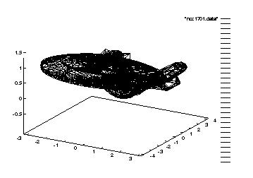

ECSE-4750 Computer Graphics: Mathematics, data structures, algorithms, and programming for the pictorial synthesis of real or imaginary objects. The X window system with Motif widgets, callbacks, events, popups, and convenience widgets. Tcl/Tk. Raster graphics. Abstract and real I/O devices. Scan conversion. Filling and clipping. Graphics hardware. Color. Homogeneous coordinates. Geometric transformations in 2-D and 3-D. Projections and viewing. Visible surface determination. Ray tracing and radiosity. Programming assignments in C. Prerequisite: Reasonable computer maturity; some hardware.. Fall and spring terms annually. 3 credit hours.
There are two parts to this course, practice and theory. We will cover many of the following subjects, depending on class interest and how fast things go. If an earlier topic proves more difficult than I thought, then I spend the extra time to get it across, and drop a later topic. If anyone feels that I am going too slowly, then see me for enrichment material.
The later topics in this list are less likely to be covered. If there are particular topics that you like or dislike, please say so.
This is a senior CSYS course, and assumes a moderate computer maturity, represented in the catalog by ECSE-2610 (Computer Components & Operations). You should know some HW, but if you don't have that specific course, don't despair.
Since there is programming in C on the workstations, you also must know some high level language, which you can translate into a knowledge of some C. If you don't know what a pointer is, then drop this course and take Computing Languages first. A good review book on C is Kelley & Pohl, A Book on C.
Computer Graphics also assumes that you know, or be able to learn, some basic linear algebra, up to the level of what an eigenvalue is.
If you're uncertain about taking this course, then, by all means, talk to me, or to previous people in it. If there is one specific fact that is unfamiliar, such as eigenvalue, then there's no problem at all.
I will be answering this email on a regular basis, if I don't get back to you in a reasonable amount of time please feel free to call me.
Email: lomong@NOSPAM.edu (replacing NOSPAM with RPI).
Office hours TBD.
Tues and Thurs 12:30-1:50 pm., DCC 330
Please make every attempt to make class. I usually explain things much more in class. If there is a topic you are not comfortable with please make that class. I also make questions on exams reflect what was discussed in class so if you choose not to attend please make sure you contact someone with good notes.
Here is a summary of important dates so far.
There will be few handouts since most things will be on the web.
The course computing environment will be the RCS Unix workstations, which there are several platforms, such as the SGIs. Many things will also work on the Sun or IBM workstations. In fact I use a Sun in my office. The main differences between the various platforms are as follows.
You may also use other workstations available to you, if they have a compatible environment. For example, ECSE and CS students each have some public workstations in their respective departments.
If you are new here at Rensselaer, then see the Academic Computing Service page at http://www.rpi.edu/Computing/ACMhome.html.
For info on using the SGI workstations in JEC 3207, see http://www.rpi.edu/Computing/New/RCS_news/SGIhandout.html. You may also use LessTif, a Motif clone. See their Home page
/dept/ecse/graphics/.
/dept/ecse/graphics/graphics-s00/,
in case you'd like a preview of possible future
homeworks. However, some things will change this year. There are now many books on X, but many of them concentrate on the lower-level Xlib stuff, not the higher-level widgets, which I concentrate on. Perhaps the best were a series of X books published by O'Reilly. Unfortunately they are now out of print. I take some examples from them; however the info is distributed over so many volumes that I can't require that you buy any of them, even if they were in print. In any case, these are some of the relevant volumes.
You can try to order O'Reilly books direct by calling O'Reilly at 800-338-6887, or by visiting their Web site.
There is also extensive online documentation on X. As for as we're concerned, X is divided into two categories: Xlib and Motif, which are documented separately.
nroff -man /campus/X11/R6/core/1.0/@sys/man/mann/appres.n | more
or printed thus:
ptroff -man /campus/X11/R6/core/1.0/@sys/man/mann/appres.n
depending on whether nroff and ptroff are installed on your system.
X is a living system, and there are many user-contributed
programs. You can browse on the RCS system under /campus/.
There are over 600 books and journals on graphics in RPI's library.
If the class wishes, there can be a course newsgroup, called
rpi.courses.Spring00.Computer-Graphics
for students to discuss relevant issues with each other. Nevertheless, I will distribute official announcements by web page or email.
I'll store copies of some interesting files from the net, such as the comp.graphics Frequently Asked Questions in the class directory.
There will be about ten homeworks, about half programming on the Unix workstations. The programming homework will be in the C language. You, and all computer engineers, don't need to know every detail, such as tentative declarations and enums; just the basics.
Homework grades tend to be bimodally distributed -- often 9 or 10/10 for work handed in, but 0/10 for work not handed in. The homework tends to be not too difficult. I see the homeworks like warmup exercises for a team, or finger exercises on the piano; everyone should be able to do them with a little work, and in doing them will learn something.
You are free to form study groups, cooperate on the homework and share answers. You may also hand in group homeworks if you wish. That is, two people may do the homeworks together and hand in one solution with both names on it. It is not acceptable retroactively to declare a partnership, as in the following (only slightly) fictional message:
``Hi, this is John Doe on Dec 10. The reason that you're missing ten homework grades for me is that I did them all as a team with Jane Roe. Unfortunately I forgot to put my name on any of them, and yes, they're all in her handwriting, but, really, I did contribute.''
You are responsible for seeing that the TA has recorded your homework grades; it is not allowed to claim at the end of the semester, after you see your grade, that we lost a homework. If you hand a homework in late, please give it to him. We will help your checking by making your interim grades available from time to time.
This will be in class. It is required, so plan your plant trips around it. We will give you the grades exams, and an estimated course letter grade several days before the drop date. The exam will be closed book; however you may bring one 8.5"x11" crib sheet covered with as much as you can write, print, or xerox-reduce on. Mechanical reproduction is ok.
How did I pick the date? It's the latest date that lets us get the graded exams back to you before the drop date.
You will think of, implement, and document a program relating to graphics. It must demonstrate both graphics input and output; other than that it must only be legal and ethical.
This may be done by a team, and may be combined with another course's project if you get the approval of everyone involved.
It may build on previous work, either by you or someone else, with their permission, provided that you mention this. For example, you may build on software, such as xfig, posted on the net. Since in the real world, much more money is spent modifying existing software than writing new software, extending an existing program is quite ok with me.
Unlike the homework, you may do the term project on any computer you have access to, even a home computer, if it is a powerful one.
The penalty for handing the project in late will be 10% per day. Plan to have it actually ready earlier in case your disk crashes or account expires. You may pick up your projects after they are graded.
Up to half the grade may be on the documentation and examples.
I may make some old projects available as examples.
The term project will be unrealistic in that I will not be as picky about formats as in the real world. Here, for example, are some of the National Science Foundation's proposal submission rules, which I am subject to.
Proposals received on or before the target date or postmarked on or before the deadline date will be accepted for review.
Proposals must be addressed EXACTLY as follows: ...
CONFORMANCE WITH INSTRUCTIONS FOR PROPOSAL PREPARATION:
It is important that all proposals conform to the instructions provided in this Section and the Proposal Forms Kit. Conformance is required and will be strictly enforced unless a deviation has been approved. Proposals that are not consistent with these instructions may be returned without further consideration by NSF. Particular attention will be given to proposal length, content and formatting, including the page limit on the Project Description, page limitations on other proposal sections, and the use of Appendices.
Each section of the proposal must be separately paginated and include both the section and page number on the bottom center of each page (e.g., C-1, C-2). The proposal must be assembled in the following sequence:
Proposals must be stapled in the upper left-hand corner, but otherwise unbound, and with 2.5-cm margins at the top, bottom and on each side. The type size must be clear and readily legible, in standard size which is 10 to 12 points. (No smaller than 10 point font size may be used.) If constant spacing is used, there should be no more than 12 characters per 2.5-cm, whereas proportional spacing should provide no more than an average of 15 characters per 2.5-cm.
Project Summary: The required format, Project Summary, NSF Form 1358, is shown in Section IX, Proposal Forms Kit...
Table of Contents: The required format, Table of Contents, NSF Form 1359, is shown in Section IX, Proposal Forms Kit.
I will hold a vote in the first class to decide between the following two choices.
The first choice means that there is one less class for learning new things. However, you get finished sooner.
Whichever choice the class makes, that date will be compulsory for the whole class.
The exam questions tend to be short answer, and to ask for reasons and advantages and disadvantages of something. I try not to ask about picky little details, but then, I might think that the fact that the first word on page 283 of Hearn is ``determine'' is of global importance, while you might think it is incredibly picky.
Where do I get exam questions?
You are encouraged, but not required, to work in teams on the homeworks and term project. In the real world teams are often required.
Feel free to incorporate someone else's ideas and code, but you must acknowledge that, and in the case of code, obtain their permission if appropriate. Failure to do this is academic dishonesty (cheating) and will cause an F grade in the work involved, and a report in your file. There is a lot of free code on the Internet that I encourage you to browse, and use in your projects. Civil engineers look at real bridges; computer engineers should look at real programs.
You must do the exams individually and not communicate with anyone other than the TA or me.
Rensselaer Polytechnic Institute has a long history of computer graphics.
The course will have little overlap with the other graphics-related courses at RPI, such as the following. You can easily take them all.
Otherwise, we might record half your grades under one name, and half under another, leading us to assign you 2 D-grades instead of one A-grade.
Suppose that we have a plane in 3-D thru the points A(1,0,1), B(0,1,0), and C(0,0,1).
s
to array t, provided that a few erroneous
lines are corrected. What are the corrections and proper
initializations? char *s="Hello!"; char t[6]; char p, q; p=s; q=t; for (;*q++ = *p++;);
ftp to find a file
on another system, and xv to display it.) The site http://www.viewpoint.com/ has many graphics files, including some texture files like ftp://avalon1.viewpoint.com/avalon/textures/tif/vege/clover01.tif .
shown here.
.
Use, e.g., ftp to get some other texture
file, then use xv (or another program if you
prefer) to display it, then save it in a PostScript file,
then print that file, as in lpr clover01.ps
to any LaserWriter or other printer that takes
PostScript. Do not spend money on a color printout;
B&W is ok. Write your name and the filename on the
printout and hand it in.
/dept/ecse/graphics/ncc1701.data.gz
is a compressed file of 3,958 triangles defining the USS
Enterprise. It looks like this when uncompressed with gunzip:
1.431000 0.505000 0.843000 1.572000 0.505000 0.801000 1.287000 0.505000 0.802000 1.431000 0.505000 0.843000 1.572000 0.505000 0.801000 1.595000 0.542000 0.794000 1.263000 0.542000 0.795000 1.572000 0.505000 0.801000 1.572000 0.505000 0.801000 1.263000 0.542000 0.795000 1.287000 0.505000 0.802000 1.572000 0.505000 0.801000 ... and similarly for 23730 more lines
Each line of the file represents one vertex in the form: (x, y, z). Four lines make one triangle; the first vertex is repeated. Two blank lines separate each triangle.
You may use any graphics program you please to plot
the ship. I used gnuplot. Uncompress the
file into /tmp, thus:
gunzip <
/dept/ecse/graphics/ncc1701.data.gz >
/tmp/ncc
You may want to cut off a piece of the file for testing:
head -1000 /tmp/ncc > /tmp/piece
Then, in gnuplot, you should set parametric mode thus:
set parametric
then surface plot the data file thus:
splot "/tmp/piece" with lines
When you see how to use (this part of) gnuplot, plot the file. Then get a screendump, and hand that in. Alternatively, Section s:gnu gives another way to print plots.
Gnuplot shows something like this. 
Do not copy the whole file into your account, but read it from the class account every time.
ncc1701.data to some other
angle and then plot it again (and hand in a copy of the
program and that plot). How do you plan to handle the
blank lines? set terminal postscript
set output "plot.ps"
(or whatever filename you want)
plot sin(x)
(or whatever).
lpr plot.ps
set terminal postscript eps
This creates an Encapsulated PostScript file. You can still print this directly, however, it won't fill the whole page.
Scan the preface and chapters 1 and 2 of the Motif Program Guide for Wed. The idea is to get a feel for things, not to memorize the details. It's here:
/campus/osf/motif/2.0/distrib/src/doc/programGuide/Output/draft/ascii/preface, ch01, ch02
or here:
/campus/osf/motif/2.0/distrib/src/doc/programGuide/Output/draft/ps/preface.ps.Z, ch01.ps.Z, ch02.ps.Z
The ascii format can be read in an xterm window, but the ps format looks, and prints, better. You'll have to uncompress those files, with uncompress, and then use ghostview.
Next Class, ECSE-4750 Computer Graphics Homepage
(31 Aug 99)
Copyright © 1998-9, Wm. Randolph Franklin. You may use my material for non-profit education and research, provided that you acknowledge me and preserve this notice.